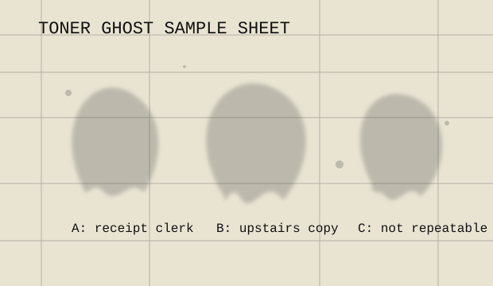

maintenance envelope / drum artifacts
Toner ghosts collected from the warm output tray
Not spirits exactly. More like leftovers with posture: old forms, overcopied receipts, the shadow of a paperclip that once had authority.

Identification marks
- Repeats every 94 mm: drum memory.
- Appears only on canary stock: humidity in tray two.
- Looks like a face when inverted: human brain, usually.
- Looks like your landlord: use fresh paper.
Filed samples
A. Receipt clerk, 1997, found in tax folder copies.
B. Upstairs copy, no original located.
C. Not repeatable; emerged during power dip at 10:41.
Handling instruction
Do not try to improve a toner ghost. Contrast makes it vain. Place questionable sheets in the manila envelope marked DRUM / WEATHER / MAYBE and write the date in pencil. The shop keeps them because patterns matter, even when they refuse to explain themselves.